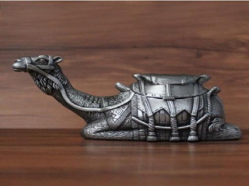
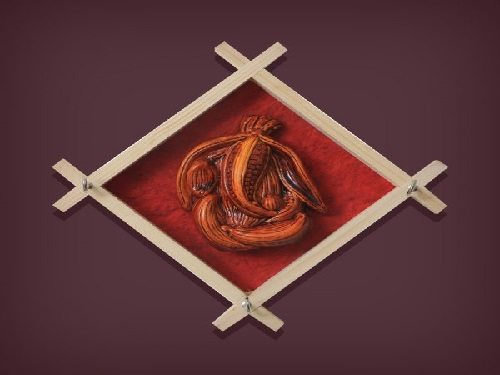
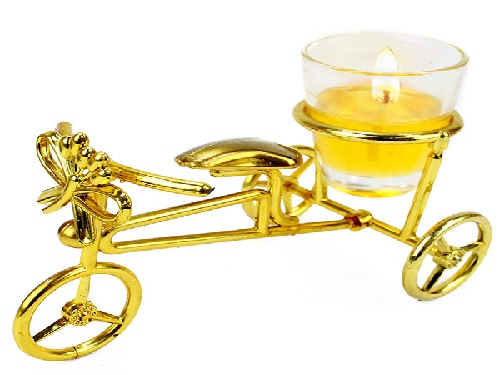
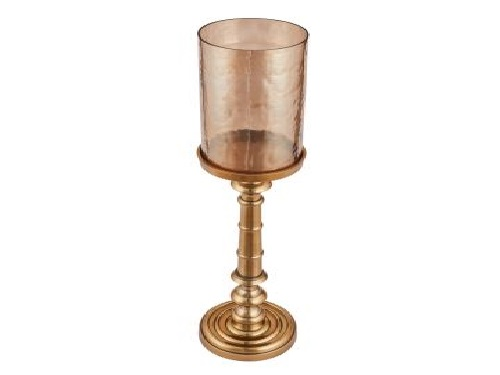

Materials
Iron Handicrafts
Iron is one of the oldest and mostly used metals. Because of reflecting the perfect fusion of high strength and low cost, it is used to craft a variety of items. Our exhaustive range of iron handicrafts is created by the agile hands of blacksmiths, who have years of vast experience in this field and hence excel in their art. These products have been given the finish of rust resistance powder, which makes them last for long duration of time.
Glass Handicrafts
We are specialized to offer glass handicrafts in the market. Our products are available in trendy designs and sophisticated patterns. Glass Votive Holder increases the beauty and elegance of the interiors. Our products are carved by skilled craftsmen adhering inherited experience in their domain. Clients can avail this comprehensive range in competitive prices.

Brass Handicrafts
Brass has been known to human since prehistoric times. It is used for many applications due to its unique features including high strength, corrosion resistance and formability. Our exclusive range of brass handicrafts is developed using best quality brass and contains various bar accessories and many other items. These brass handicrafts are acclaimed by our global clients owing to their versatile designs, impeccable workmanship and all the more most reasonable prices.
Wood Handicrafts
Wood has been an important material for constructing furniture and various decorative items. In the production of wood handicrafts. Each and every piece of our collection is a true masterpiece in itself and reflects the true grace and richness of Indian culture & craftsmanship. Our range is created out of solid wood in several pleasing and trendy designs to provide you maximum satisfaction and real value of your money.
Aluminium Handicrafts
Aluminum is the most abundant metallic element on earth, which is known for its exclusive characteristics like resistance to corrosion, lightness, good thermal and electrical conductivity. By using the finest quality of aluminum, our team of talented artists create various wonderful designs, which will certainly provide you long time superior performance along with luxurious fashion.

Table Wares
Be it any festive party, social gathering or other occasions, the setting of tables exhibits your lifestyle as well as your enthusiasm to welcome the guests. Venus handicrafts is a highly acclaimed manufacturer and supplier of a collection of tablewares. From coasters to napkin rings, trays to utensils, we have each item, which will create a magic around your tables. We supply tablewares, glass tablewares, antique tablewares in bulk qauntities

Home deco
Home, a place where you spend much of your time! The transformation of your home into a place of beauty is absolutely in your hands. Moreover, their quality makes them last for long time to provide your home decor a timeless beauty.Our range of home decor comprise of home decoration store, home decoration furniture, home theater decoration, modern home decoration, contemporary home decoration etc.
Candle Accessories
Candle holders were one of the primary lighting solutions in the past and used for illumination as well as rituals & decorative purposes. In spite of being phased out by electric lighting, they are still used todays to enhance the decor of any interior. Venus handicrafts presents an exclusive collection of decorative candle holders, which are aesthetically designed in various elegant designs and gel with the decor of your contemporary home and office.
Handicraft decorative
 Items made by customer's specific choices of uses and subtlety.
Additional products
 Additional items made by our own staff with their own choices of uses and subtlety.